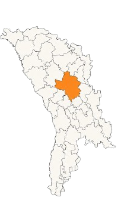

O LUMINĂ DIN PIATRA
Centru comunitar și inițiativă internațională – Republica Moldova
„Credem că adevărata schimbare apare atunci când oamenii sunt sprijiniți, încurajați și implicați activ în dezvoltarea propriei comunități, devenind la rândul lor sprijin pentru ceilalți.”
Proiectul „O lumină din Piatra” reprezintă extinderea activităților Asociației Forța Vieții în Republica Moldova, având ca punct de pornire localitatea Piatra, Raionul Orhei.
La început, proiectul a funcționat sub denumirea „O lumină în Piatra”, deoarece activitățile erau concentrate exclusiv în această comunitate. Pe măsură ce voluntarii și partenerii implicați au început să dezvolte relații și activități și în alte localități, proiectul s-a extins natural către mai multe comunități. Din acest motiv, proiectul poartă astăzi denumirea „O lumină din Piatra”, exprimând dorința ca sprijinul, implicarea și valorile dezvoltate aici să ajungă mai departe și în alte zone.
Totul a început atunci când o familie originară din această comunitate, stabilită ulterior în România și apropiată de activitățile asociației, ne-a prezentat realitățile și nevoile din zonă și ne-a invitat să ne implicăm.
În urma acestor legături, unul dintre voluntarii implicați în proiect a achiziționat o clădire în localitatea Piatra, care ulterior a fost donată Asociației Forța Vieții. Împreună cu voluntari, parteneri și comunitatea locală, a început procesul de renovare și dezvoltare a unui centru comunitar multifuncțional destinat activităților educaționale, sociale, medicale, culturale, de sprijin comunitar și de susținere moral-spirituală.
Proiectul urmărește dezvoltarea unei lucrări sustenabile și pe termen lung, asemănătoare activităților desfășurate de Asociația Forța Vieții în România.
Ce ne propunem
- dezvoltarea unui centru comunitar funcțional și a unei rețele de sprijin între comunități
- organizarea de activități educaționale pentru copii și adolescenți
- desfășurarea de tabere și activități recreative
- organizarea de acțiuni medicale și de prevenție
- susținerea familiilor vulnerabile prin ajutor practic și umanitar
- oferirea unui cadru de sprijin moral și spiritual pentru persoane și familii aflate în dificultate
- formarea și implicarea voluntarilor locali
- dezvoltarea unei colaborări active între comunitățile implicate în proiect
- încurajarea oamenilor să se implice unii pentru alții și să devină sprijin pentru alte localități
Colaborare și implicare locală
- Activitățile proiectului sunt desfășurate prin colaborarea voluntarilor, a partenerilor locali și a autorităților din comunitățile implicate, urmărindu-se dezvoltarea unei implicări active și responsabile la nivel local.
- Unul dintre obiectivele importante ale proiectului este formarea unor relații sănătoase și a unei colaborări reale între comunitățile implicate.
- În timp, oameni din Piatra, Jeloboc, Budăi, Step-Soci și chiar din Orhei au început să colaboreze, să se sprijine reciproc și să participe împreună la dezvoltarea altor localități precum Pohorniceni sau Zorile.
Zone de intervenție
Piatra
Jeloboc
Pohorniceni
Budăi
Step-Soci
Zorile
Orhei
alte localități implicate în dezvoltarea proiectului

Activitățile proiectului
Educație și activități pentru copii
Au fost organizate întâlniri educaționale, activități muzicale, lecții, jocuri și tabere pentru copii și adolescenți.
Sprijin comunitar și umanitar
Familiile vulnerabile au fost sprijinite prin distribuirea de alimente, produse necesare și ajutor practic.
Activități medicale
În comunitate au fost organizate consultații medicale gratuite, activități de prevenție și distribuire de vitamine și materiale de sprijin.
Activități culturale și moral-spirituale
În cadrul proiectului sunt organizate întâlniri comunitare, activități de încurajare, momente muzicale, lecții tematice și acțiuni care urmăresc dezvoltarea valorilor morale, a responsabilității și a sprijinului reciproc în comunitate.
Renovarea și dezvoltarea centrului
Voluntarii implicați în proiect au participat la lucrări de curățenie, renovare, amenajare și extindere a centrului comunitar.
Formarea unei echipe locale
Pe parcursul dezvoltării proiectului s-au alăturat voluntari locali, familii, parteneri, biserici, asociații și colaboratori care contribuie activ la desfășurarea activităților.
Viziunea noastră
Credem că schimbarea unei comunități începe prin relații autentice, implicare constantă și dezvoltarea unor oameni care, la rândul lor, devin sprijin pentru ceilalți.
Ne dorim să vedem comunități unite, oameni implicați și inițiative locale care continuă să aducă speranță, sprijin și dezvoltare pe termen lung.
{kind=link}